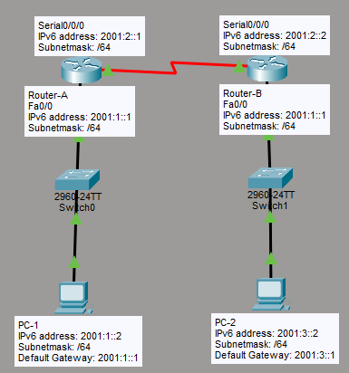

What I Learned
OSPFv3 is the IPv6 version of OSPF. The core concept is the same as OSPFv4 — link-state routing, areas, DR/BDR election — but the configuration approach is completely different. Instead of enabling OSPF per network using the network command, OSPFv3 is enabled directly on each interface.
The other key difference: OSPFv3 uses a Router ID in 32-bit IPv4 dotted-decimal format even in a pure IPv6 environment. Since there are no IPv4 addresses, you must set it manually. That's the part that tripped me up the first time.
OSPF vs OSPFv3
OSPFv3 is defined in RFC 5340. While it uses the same fundamental OSPF algorithm, several key parameters changed for IPv6:
| Feature | OSPF (IPv4) | OSPFv3 (IPv6) |
|---|---|---|
| Protocol version | OSPFv2 | OSPFv3 |
| Multicast — All OSPF routers | 224.0.0.5 |
FF02::5 |
| Multicast — DR/BDR routers | 224.0.0.6 |
FF02::6 |
| Router ID format | Derived from IPv4 address | Must be set manually (32-bit IPv4 format) |
| OSPF enabled per | Network (network command) |
Interface (ipv6 ospf area command) |
| Authentication | MD5 / plain text | IPSec (native to IPv6) |
router-id — otherwise OSPFv3 will not start.
Multicast Addresses
OSPFv3 uses IPv6 link-local multicast addresses for hello packets and LSA flooding. These replace the IPv4 multicast addresses used in OSPFv2.
FF02::5
All OSPF Routers — equivalent to 224.0.0.5 in IPv4. Every OSPFv3-enabled router listens on this address.
FF02::6
All Designated Routers — equivalent to 224.0.0.6 in IPv4. Used for communication with DR and BDR only.
FE80::/10 addresses, which are auto-generated on every interface.
My Lab Topology
The lab uses two routers (RA and RB) connected via a serial link, each with a FastEthernet LAN interface. The same commands apply to both routers — only the Router ID and interface addresses differ.

| Device | Interface | IPv6 Address |
|---|---|---|
| Router A | Fa0 | 2001:1::1/64 |
| Router A | S0 | 2001:2::1/64 |
| Router B | S0 | 2001:2::2/64 |
| Router B | Fa0 | 2001:3::1/64 |
Download my Packet Tracer lab:
Download Lab FileConfiguration
RA & RB — OSPFv3 Configuration
The same command sequence is applied on both routers. Only the Router ID and interface IPv6 addresses differ.
enable
config t
! Step 1 — Enable IPv6 routing (required before any IPv6 routing protocol)
ipv6 unicast-routing
! Step 2 — Create OSPF process and set Router ID
! Router ID must be set manually in pure IPv6 environments
ipv6 router ospf 10
router-id 10.10.10.10
exit
! Step 3 — Enable OSPFv3 on FastEthernet interface
interface fa0
ipv6 ospf 10 area 0
exit
! Step 4 — Enable OSPFv3 on Serial interface
interface s0
ipv6 ospf 10 area 0
exitnetwork command in OSPFv3. OSPF is enabled directly on the interface with ipv6 ospf [process-id] area [area-id]. Each interface that should participate in OSPF must have this command.
OSPFv3 vs RIPng — Command Comparison
| Task | RIPng | OSPFv3 |
|---|---|---|
| Enable routing | ipv6 unicast-routing |
ipv6 unicast-routing |
| Create process | ipv6 router rip [name] |
ipv6 router ospf [pid] |
| Router ID | Not required | router-id x.x.x.x (mandatory) |
| Enable on interface | ipv6 rip [name] enable |
ipv6 ospf [pid] area [id] |
Verification
! View IPv6 routing table — look for 'O' entries (OSPF learned routes)
show ipv6 route
! View OSPF neighbor adjacencies — confirm DR/BDR relationships
show ipv6 ospf neighbors
! View OSPF link-state database
show ipv6 ospf databaseshow ipv6 route— remote networks should appear with prefix O (OSPF)show ipv6 ospf neighbors— neighbor state should be FULLshow ipv6 ospf database— LSAs from both routers should appear
Key Takeaways
What I Understood
- OSPFv3 is the IPv6 version of OSPF — same algorithm, different configuration syntax
- OSPF is enabled per interface in OSPFv3, not per network
- The Router ID must be set manually in a pure IPv6 environment — OSPFv3 will not start without it
- OSPFv3 uses
FF02::5(all OSPF routers) andFF02::6(DR/BDR) as multicast addresses - Adjacencies are formed using link-local addresses (
FE80::/10), not global unicast addresses ipv6 unicast-routingmust be enabled before OSPFv3 can run- Authentication in OSPFv3 uses IPSec — it is native to IPv6